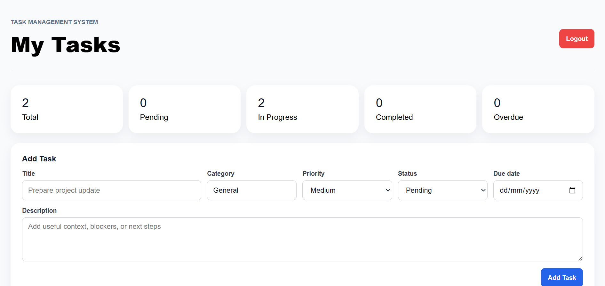
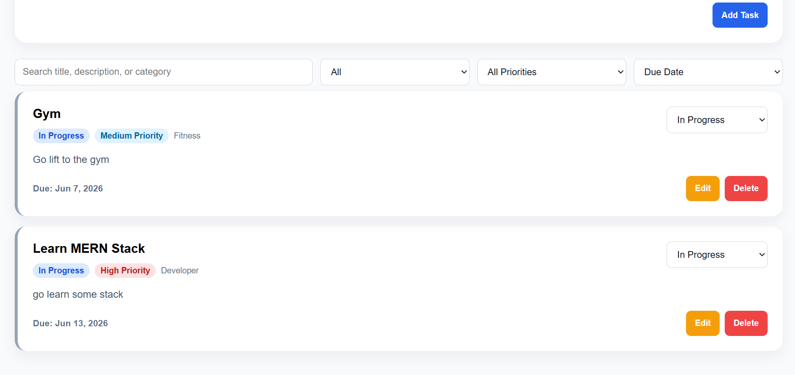

Featured Case Study
Task Management System
A full stack web application that allows users to register, log in securely, and manage personal tasks using a modern React frontend, FastAPI backend, and MySQL database.


Overview
Managing tasks through a modern full stack application.
The Task Management System is a full stack productivity application that enables users to securely manage their personal tasks through authentication, database persistence, and cloud-hosted services. The project demonstrates frontend development, backend API design, database management, and modern deployment workflows.
Problem
Users need a simple way to organize tasks, monitor progress, and manage work efficiently.
Solution
Developed a secure task management system with authentication, task creation, updates, deletion, and database storage.
Outcome
Successfully deployed a complete full stack web application using modern development and cloud deployment tools.
Technology
Tools Used
Features
Key functionality
User Authentication
Secure registration and login system using JWT authentication.
Task Management
Create, update, complete, and delete tasks through an intuitive interface.
Database Integration
Tasks and user accounts are stored in a MySQL database hosted on Railway.
Deployment